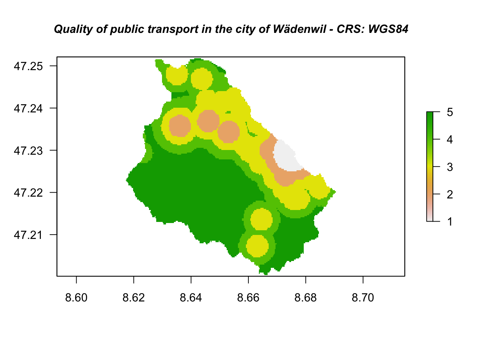
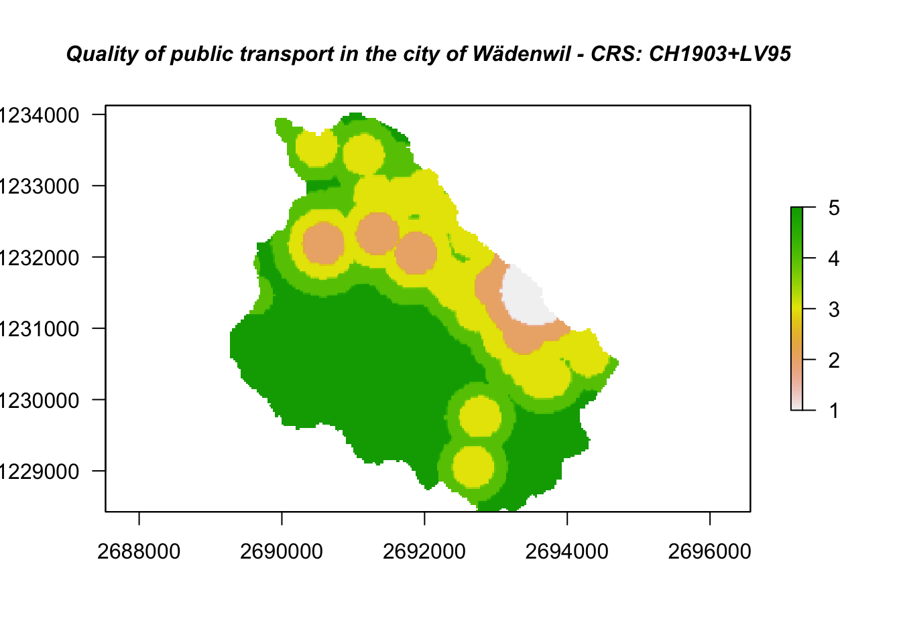

4.4 Projections and Transformations Toolset
For this chapter, you will need the following R Packages:
If there is anything special about spatial, it’s the Coordinate Reference System. We will not get into the topic of CRS and Projections here, but it is advisable to get up to speed on this topic if you are dealing with geodata. From this toolset, we will cover the following tools:
- Define Projection
- Project
- Project Raster
- Rescale (Resizes a raster by the specified x and y scale factors)
4.4.1 Define Projection
Overwrites the coordinate system information (map projection and datum) stored with a dataset. This tool is intended for datasets that have an unknown or incorrect coordinate system defined.
If your dataset comes without an assigned CRS, things can get hairy. Usually, you can make an informed guess as to which CRS the dataset is associated with, but in the end only the data producer can tell you. Let’s take the dataset bezirke from the package arc2r. As you can see, the CRS field in the data’s header is NA.
data("bezirke")Calling the function st_crs() on bezirke confirms this.
st_crs(bezirke)
## Coordinate Reference System: NAIn ArcGIS, we would use the Tool “Define projection.” In R, we use the function st_crs(dataset) <- value, where value is the CRS of our dataset. It can be either
- A string accepted by GDAL (type
character) - A valid EPSG value (type
integer) or - An object of class crs
We find option two to be the simplest approach.
Since we know the dataset bezirke is in the new swiss coordinate system (CH1903+ / LV95), we can find out the EPSG code (e.g. by consulting epsg.io).
We will not get into options 1 and 3 and only
st_crs(bezirke) <- 2056If we look at our header again, we see that we have a new field projected CRS which is in fact displaying the correct name based on the EPSG code we provided.
bezirke
## Simple feature collection with 192 features and 4 fields
## geometry type: MULTIPOLYGON
## dimension: XYZ
## bbox: xmin: 2485424 ymin: 1075268 xmax: 2833842 ymax: 1295937
## z_range: zmin: -1.455192e-11 zmax: -1.455192e-11
## projected CRS: CH1903+ / LV95
## First 10 features:
## NAME OBJEKTART OBJECTID area_km2
## 1 Albula Bezirk 137 683.35044
## 2 Engiadina Bassa/Val Müstair Bezirk 74 1197.52015
## 3 Prättigau/Davos Bezirk 112 853.35653
## 4 Maloja Bezirk 183 973.72688
## 5 Entremont Bezirk 72 633.27334
## 6 Visp Bezirk 182 29.27770
## 7 Visp Bezirk 167 835.54866
## 8 Sierre Bezirk 88 417.76967
## 9 Interlaken-Oberhasli Bezirk 15 1231.67445
## 10 Hérens Bezirk 143 55.10483
## geom
## 1 MULTIPOLYGON Z (((2758433 1...
## 2 MULTIPOLYGON Z (((2812980 1...
## 3 MULTIPOLYGON Z (((2767328 1...
## 4 MULTIPOLYGON Z (((2775675 1...
## 5 MULTIPOLYGON Z (((2574263 1...
## 6 MULTIPOLYGON Z (((2633950 1...
## 7 MULTIPOLYGON Z (((2630650 1...
## 8 MULTIPOLYGON Z (((2598823 1...
## 9 MULTIPOLYGON Z (((2629665 1...
## 10 MULTIPOLYGON Z (((2593875 1...4.4.2 Project
Projects spatial data from one coordinate system to another
Now that bezirke has an assigned CRS (see 4.4.1, we can transform it into a new coordinate system. To emphasize this, will will visualize the dataset using base::plot() with the option axes = TRUE, to visualize the current coordinate system.
plot(bezirke["area_km2"], axes = TRUE)
bezirke_wgs84 <- st_transform(bezirke, 4326)
plot(bezirke_wgs84["area_km2"], axes = TRUE)
st_crs(bezirke)
## Coordinate Reference System:
## User input: EPSG:2056
## wkt:
## PROJCRS["CH1903+ / LV95",
## BASEGEOGCRS["CH1903+",
## DATUM["CH1903+",
## ELLIPSOID["Bessel 1841",6377397.155,299.1528128,
## LENGTHUNIT["metre",1]]],
## PRIMEM["Greenwich",0,
## ANGLEUNIT["degree",0.0174532925199433]],
## ID["EPSG",4150]],
## CONVERSION["Swiss Oblique Mercator 1995",
## METHOD["Hotine Oblique Mercator (variant B)",
## ID["EPSG",9815]],
## PARAMETER["Latitude of projection centre",46.9524055555556,
## ANGLEUNIT["degree",0.0174532925199433],
## ID["EPSG",8811]],
## PARAMETER["Longitude of projection centre",7.43958333333333,
## ANGLEUNIT["degree",0.0174532925199433],
## ID["EPSG",8812]],
## PARAMETER["Azimuth of initial line",90,
## ANGLEUNIT["degree",0.0174532925199433],
## ID["EPSG",8813]],
## PARAMETER["Angle from Rectified to Skew Grid",90,
## ANGLEUNIT["degree",0.0174532925199433],
## ID["EPSG",8814]],
## PARAMETER["Scale factor on initial line",1,
## SCALEUNIT["unity",1],
## ID["EPSG",8815]],
## PARAMETER["Easting at projection centre",2600000,
## LENGTHUNIT["metre",1],
## ID["EPSG",8816]],
## PARAMETER["Northing at projection centre",1200000,
## LENGTHUNIT["metre",1],
## ID["EPSG",8817]]],
## CS[Cartesian,2],
## AXIS["(E)",east,
## ORDER[1],
## LENGTHUNIT["metre",1]],
## AXIS["(N)",north,
## ORDER[2],
## LENGTHUNIT["metre",1]],
## USAGE[
## SCOPE["unknown"],
## AREA["Europe - Liechtenstein and Switzerland"],
## BBOX[45.82,5.96,47.81,10.49]],
## ID["EPSG",2056]]bezirke_swiss <- st_transform(bezirke, 2056)
# retrieve the coordinate system
st_crs(bezirke_swiss)
## Coordinate Reference System:
## User input: EPSG:2056
## wkt:
## PROJCRS["CH1903+ / LV95",
## BASEGEOGCRS["CH1903+",
## DATUM["CH1903+",
## ELLIPSOID["Bessel 1841",6377397.155,299.1528128,
## LENGTHUNIT["metre",1]]],
## PRIMEM["Greenwich",0,
## ANGLEUNIT["degree",0.0174532925199433]],
## ID["EPSG",4150]],
## CONVERSION["Swiss Oblique Mercator 1995",
## METHOD["Hotine Oblique Mercator (variant B)",
## ID["EPSG",9815]],
## PARAMETER["Latitude of projection centre",46.9524055555556,
## ANGLEUNIT["degree",0.0174532925199433],
## ID["EPSG",8811]],
## PARAMETER["Longitude of projection centre",7.43958333333333,
## ANGLEUNIT["degree",0.0174532925199433],
## ID["EPSG",8812]],
## PARAMETER["Azimuth of initial line",90,
## ANGLEUNIT["degree",0.0174532925199433],
## ID["EPSG",8813]],
## PARAMETER["Angle from Rectified to Skew Grid",90,
## ANGLEUNIT["degree",0.0174532925199433],
## ID["EPSG",8814]],
## PARAMETER["Scale factor on initial line",1,
## SCALEUNIT["unity",1],
## ID["EPSG",8815]],
## PARAMETER["Easting at projection centre",2600000,
## LENGTHUNIT["metre",1],
## ID["EPSG",8816]],
## PARAMETER["Northing at projection centre",1200000,
## LENGTHUNIT["metre",1],
## ID["EPSG",8817]]],
## CS[Cartesian,2],
## AXIS["(E)",east,
## ORDER[1],
## LENGTHUNIT["metre",1]],
## AXIS["(N)",north,
## ORDER[2],
## LENGTHUNIT["metre",1]],
## USAGE[
## SCOPE["unknown"],
## AREA["Europe - Liechtenstein and Switzerland"],
## BBOX[45.82,5.96,47.81,10.49]],
## ID["EPSG",2056]]4.4.3 Project Raster
Transforms a raster dataset from one coordinate system to another
Working with Raster datasets in GIS of operations is of equal importance, as working with vector ones. One of the spatial properties of raster datasets is the the Coordinate Reference System (CRS). CRS is the specific system that “associates” the raster coordinates (which are just pairs of x/y values) to geographic locations. In ArcGIS pro the tool for projecting a raster dataset is called Project Raster (Data Management). Let’s see how we can perform the same operation with R.
# Dataset derived from the spatial interpolation of all the available "recycling points"
# in the city of Wädenwil
data("recycling_raster")
# Dataset representing the public transport quality in the city of Wädenswil
data("public_transport_waedi")# CRS -> WGS84 # Plot the raster dataset - World Geodetic System 1984
plot(public_transport_waedi,las=1,
main = "Quality of public transport in the city of Wädenwil - CRS: WGS84",
cex.main=1,font.main=4)
We can use the projectRaster() function to reproject a raster into a new CRS.
The first argument of the aforementioned function is the raster dataset we want to reproject,
while the second one is the dataset to whose projection we are targeting to. So, in
our case, we are targeting to the coordinate system of the raster_recycling
dataset.
It is important to remember that raster reprojection only works when the raster
object has already a defined CRS.
# Transform the coordinate system of the raster dataset publicTransport_CH
# into the Swiss Coordinate system - CH1903+LV95
publicTransport_CH = projectRaster(public_transport_waedi, recycling_raster)# Plot the raster dataset - Swiss Coordinate System CH1903+LV95
plot(publicTransport_CH,las=1,
main = "Quality of public transport in the city of Wädenwil - CRS: CH1903+LV95",
cex.main=1,font.main=4)